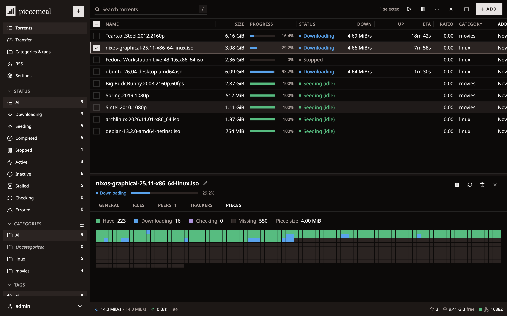

piecemeal
Self-hosted BitTorrent · Go · MIT
Every piece,
in its place.
A drop-in qBittorrent for Radarr, Sonarr and Prowlarr, with a web UI and SSO.

Self-hosted BitTorrent · Go · MIT
A drop-in qBittorrent for Radarr, Sonarr and Prowlarr, with a web UI and SSO.